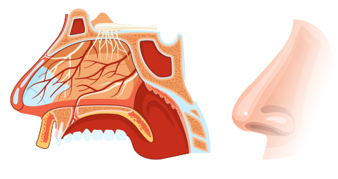

M erocel Packing
Specific brand of nasal packing material used to control bleeding.
Minimal Invasiveness
Techniques or materials used to reduce surgical impact and promote faster recovery.
Mucosal Displacement
Movement of the nasal mucosa due to packing or other factors.
Mucosal Healing
Process of recovery and repair of the nasal mucosa after injury or surgery.
Mucosal Irritation
Inflammation or discomfort of the nasal mucosa.
Mucosal Preservation
Methods to maintain the integrity of the nasal mucosa during treatment.
Mucosal Protection
Methods to protect the nasal mucosa during and after surgery.
Mucosal Reaction
Response of nasal mucosa to treatment or packing material.
Mucosal Recovery
Healing process of the nasal mucosa following treatment or injury, restoring its normal function and integrity.
Nasal Airway
Passage in the nasal cavity through which air flows.
Nasal Cavity
The internal space of the nose
where air passes and mucosa is located.
Nasal Congestion
Blockage or swelling of nasal passages leading to difficulty breathing.
Nasal Debridement
Removal of dead or damaged tissue from the nasal cavity.
Nasal Fracture
Break or crack in the bones of the nose.
Nasal Hemorrhage
Bleeding occurring within the nasal cavity.
Nasal Lavage
Rinsing the nasal passages with a saline solution to clear mucus and debris.
Nasal Obstruction
Blockage or closure of the nasal passages.
Nasal Packing Device
A medical device used to fill the nasal passages to control bleeding, support the mucosa, or promote healing after surgery or injury.
Nasal Packing Insertion
Procedure of placing packing material into the nasal cavity.
Nasal Packing Removal
Process of removing packing material from the nasal cavity.
Nasal Packing Strips
Thin strips of packing material used to support nasal tissues.
Nasal Plug
Device used to block or occlude the nasal passages.
Nasal Septum
The cartilage and bone structure
that divides the nasal cavity into
two halves.